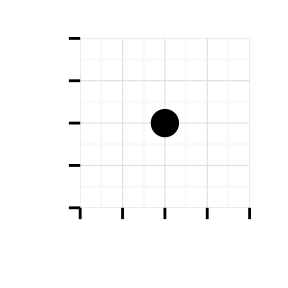

Raw data
## mpg hp ## Mazda RX4 21 110
- Statistical transformation/analysis:
{x: .5, y: .5} - Rendering 
Modify rendered elements in browser
June 8, 2015
Raw data
## mpg hp ## Mazda RX4 21 110
{x: .5, y: .5}Modify rendered elements in browser
ggplot(mtcars, aes(mpg, hp)) + geom_point(size = 5)
grid::grid.force()
pts <- grid::grid.ls(print = FALSE)$name %>%
grep("geom_point.points", ., value = TRUE)
gridSVG::grid.garnish(pts, cyl = paste(mtcars$cyl), group = FALSE)
gridSVG::grid.export(NULL)$svg
Not a .png! Generates svg code rendered by the browser
d3.jsvar points = d3.selectAll("[id^='geom_point.points.100.1.']")
points.on("click", function(){
// do something
alert("cyl: " + d3.select(this).attr("cyl"));
})
library(plotROC)
D.ex <- rbinom(200, 1, .5)
paired.data <- data.frame(M1 = rnorm(200, mean = D.ex),
D = D.ex)
roc.ci <- calculate_roc(paired.data$M1, paired.data$D,
ci = TRUE, alpha = 0.05)
ci.rocplot <- ggroc(roc.ci, label = "CI Example", ci = TRUE)
cat(
export_interactive_roc(ci.rocplot,
prefix = "aci",
omit.d3 = TRUE)
)
grid.garnish(key = value)
extract with
.attr("key")R (alpha = 0),
show them interactively
.attr("opacity", 1)panel.background.rect useful for creating d3 scalesfig.keep='none', results = 'asis' in knitrR -> create SVG for use in browser
d3.js to provide interactivity
R packages to accomplish specific task, e.g. plotROCThis would not be possible without the following: